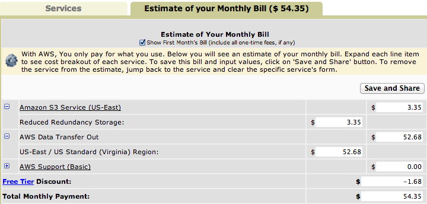
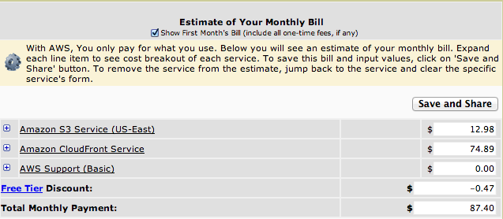
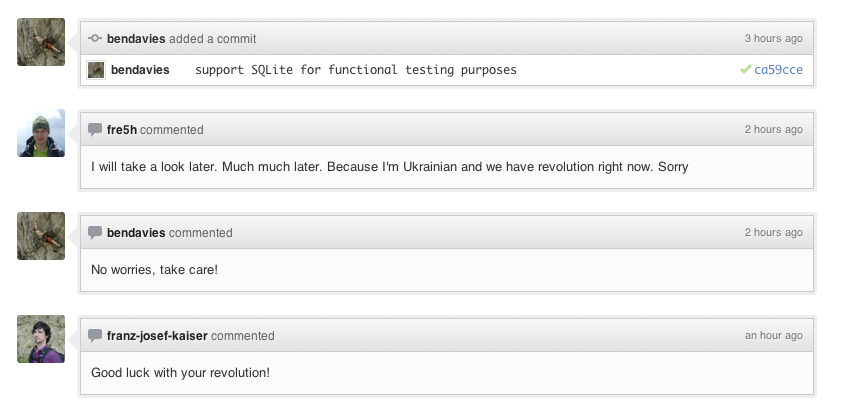

BIG
quality from
small
teams
Jan 22, 2014
- Daryl Chymko / @dchymko
Intro
Who Am I?

Intro
In the olden days
Web projects were expensive
You had to have a big team
Multiple DBAs, deployment, Ops people
New work/features were hard to ship
Intro
Nowadays
"The cloud" makes things cheap and easy

$54.35
$87.40
Oh you wanted redundancy and caching with that?
Demo time!
(Live) Demo!
www.changehereos.com/pages/darylQuality
What does Quality mean (Sivers)?
Brand new? Perfect? Status?
How do you get quality?
DVCS
Do you use Github? Bitbucket?
Who hold the keys to it?
Can anyone on your team (even *shudder* designers) easily push live code?
How do you get quality?
Code reviews
Everyone should have eyes on as much of the code base as possible
How do you get quality?
Issue tracker
Do you use one?
Does everyone know how to effectively use it?
Being Proactive
Find errors BEFORE your users tell you
Being Proactive
Which bugs are the most deadly (expensive)?
Bugs you know about and know how to fix
Bug you know about but don't know how to fix
Bugs you don't know about
Being Proactive
Use SOMETHING to monitor the site status and quality
Pingdom
AreMySitesUp.com
Sentry
New Relic
Being Proactive
Automated testing
Prevention
TRUST your tools & process
Prevention
Embrace existing libraries, services.
There are way smarter people than you (me).
Prevention
Keep things simple. Don't re-invent the wheel
What does the CUSTOMER think?
Are you putting your own learning ahead of the customer?